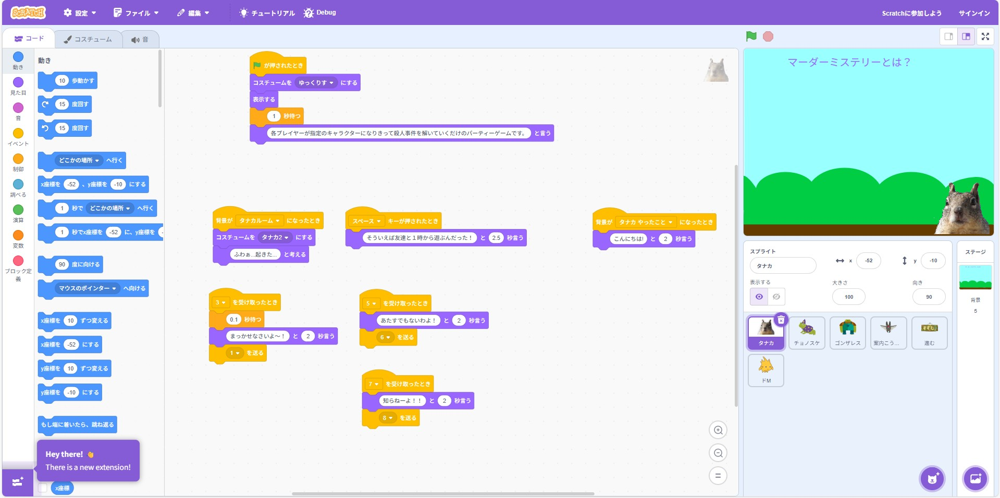
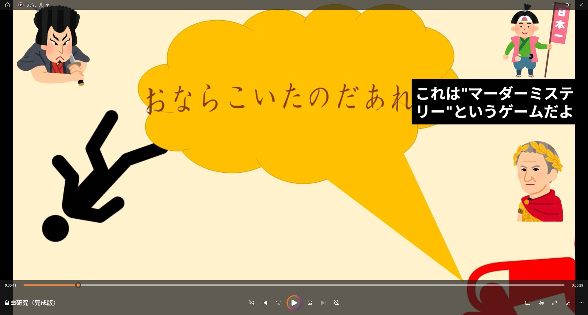

自由研究
自由研究では、Scratchを使ってゲームを作り、それを動画編集しました。


~Scratch編~
前半は自分が作りましたが、あまりにもやる気が起きなかったので後半は相方ののりぼーに任せました。
☆Scratchとは？
もとは子ども用に作られた教育用のプログラミングWebサイトですが、数多の作品が点在している。その中にはユニークな作品もあるが、中にはクオリティの高いものもある。
感想
結論から言うと、個人的には苦労が多かったです。最初のころは、いろいろ機能が付いていて、わかりやすくデザインが施されており、これぐらいだったらできそうだなと思っていました。
しかし、いざ始めてみると、とってもめんど辛い作業が続いていて、正直やりたくないなと思う日々が続いていました。
なので、後半は相方ののりのりのりゆき君に任せて私は動画作成にシフトしました。
~動画編集編~
素材をもらって以前から別の用途で使ってたソフトである「Clipchamp」を利用していました。
Clipchampとは？
Microsoft365が提供している動画編集ソフトです。いろんなパターンに対応したテンプレートや音声、画像などがある。
感想
scratchを投げやってしまったので、動画編集は頑張ろう！と意気込んだのはいいものの、題名が題名なだけでめっちゃ疲れますた。
今回作った動画は3人のキャラにそれぞれ別の声を割り当てて内容を考えながら物語を進めているので、考えながら動画の構成を練っていくのは
とってもたいへんですた。
基本的にはシナリオ通りの文章を言わせるだけでいいのですが、シナリオがない完全アドリブの場面もあるのでそこは一からセリフを考えないといけないので、
とても大変でしたが、完成した時には達成感がありました。
今回の研究内容をざっくりと
３人の登場人物であるタナカ・ちょのすけ・ゴンザレスが公園で遊ぼうとしているのですが、その３人の中で大きい音でおならをしてしまった人を
時系列などを見て真剣に話し合って犯人を見つけ出そう！という物語です。詳しくは本番発表のことを思い出してください。
もしくは言ってくれれば誰でもゲーム自体はできるので言ってください。